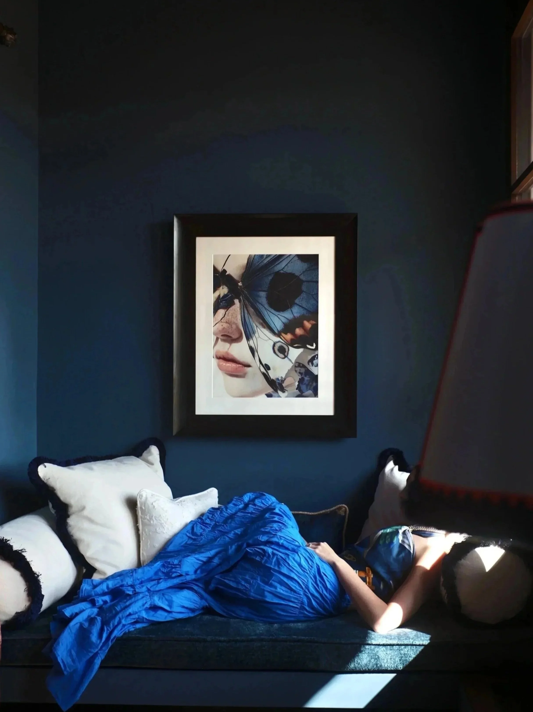

Capella Ubud, Hoshinoya Bali, and the case for surrendering completely to a destination that refuses to be hurried. Some places teach you to slow down. Ubud removes the option of doing anything else.
There is a particular quality to the silence above the Ayung River just before dawn. Not the silence of absence — the jungle is never absent — but the silence of a world wholly preoccupied with itself. The calls of birds you cannot name. The sound of water over stone far below. Your own breathing, which you suddenly notice has shifted without your having to ask it to. Ubud does this to people. It is, in the most literal sense, a place that changes the register of the body.
Bali's interior highlands have long attracted a particular kind of traveller: one who arrives looking for something and cannot quite name what it is. Artists came first, drawn by the culture's extraordinary visual density — the daily offerings woven from palm leaf, the temple ceremonies that appear on any given Tuesday morning as though they were always meant to coincide with your walk to breakfast. Writers followed. Then a certain wave of design-forward hospitality that understood the landscape not as backdrop but as the actual subject.
A tent above the river
Capella Ubud sits on a ridge above the Ayung River with the conviction of something that has always been there. Its tented camp format, conceived by Aman's former principal architect Kerry Hill in the final years before his passing, is both romantic and architecturally rigorous. The tents — large enough to feel like proper rooms, detailed with dark teak and raw linen — open onto private decks suspended above the river gorge. The Ayung curves below, olive-green and unhurried, audible at all hours. You sleep to the sound of it. You wake to the same sound. The continuity is the point.
Dinner is served in a restored antique joglo — a traditional Javanese pavilion — transported to the site in pieces and reassembled on the ridge. The effect is that of eating inside an heirloom. The cooking draws from Balinese ceremonial tradition: turmeric, galangal, kaffir lime, black pepper from the island's own gardens. Every element has been considered at a level of detail that most properties reserve for the suite furnishings. Here, the attention extends to the meal itself, to the plates on which it arrives, to the angle at which candlelight falls through the carved teak screen.

Photography courtesy of worldofsplendid.com
Arriving only by water
Hoshinoya Bali takes a different position on the question of accessibility. Reaching it requires a short boat ride along the Pakerisan River, a journey that functions as a deliberate erasure of the outside world. By the time you step onto the private dock, whatever you brought with you from the airport — the emails, the itineraries, the ambient stress of forward motion — has already begun to loosen. The river saw to that.
The Japanese hospitality group Hoshino Resorts has applied its characteristic philosophy of deep cultural immersion to Balinese traditions with care and rigor. Guests participate in morning water purification rituals at a nearby temple. Cooking classes focus on the sacred dimension of Balinese cuisine, not merely its flavour profiles. Spa treatments draw from Jamu, the Indonesian herbal medicine tradition that predates colonial contact. The property's river pavilions are designed to disappear into the surrounding vegetation — stone walls, thatched roofs, gardens that read as wild even where they have been deliberately planted.
"Ubud refuses the logic of the itinerary. The best days here are the ones where nothing in particular is planned, and everything that matters somehow still occurs."
The art of doing very little
Outside the gates of either property, Ubud offers its own rewards to those patient enough to find them. The Agung Rai Museum of Art houses a permanent collection that traces Balinese and Indonesian painting from the colonial era through the present — an education in seeing, conducted in a building set within gardens that alone justify the visit. The artists' quarter around Penestanan continues to produce painters working in a tradition that absorbs outside influence without surrendering to it. Local weaving cooperatives in Kamasan still produce ceremonial cloths using natural pigments and techniques unchanged across centuries.
The rice terraces of Tegallalang, despite their fame and the crowds that fame inevitably generates, retain something irreducible. Walking them in early morning, before the light turns hard and the tour groups arrive, feels like moving through a landscape dreamed rather than cultivated. The subak irrigation system that maintains these terraces has been recognised by UNESCO as a living cultural landscape — not a monument, but a practice, still in use, still producing rice that feeds the island.
What Ubud asks of you
The question Ubud puts to its visitors is not the usual one. Most destinations ask what you would like to do. Ubud asks something closer to what you are willing to let go. The mobile signal weakens in the river valleys. The offerings placed at thresholds each morning require you to step around them with a care that slows your pace. The ceremonial processions that materialise from side streets demand that you stop, wait, watch something that is not for you and is entirely open to your witnessing.
This is a place where the quality of a morning depends less on where you go than on the depth of attention you bring. Both Capella and Hoshinoya understand this. Their genius is in having created environments that train the eye and quieten the mind before you have quite realised what is happening. You arrive thinking you are on holiday. You leave uncertain what you have actually done, but certain that it mattered.
Ubud is not a destination that rewards the compressed visit. It offers itself slowly, in increments, over days that begin to resemble each other in the best possible way. The jungle swallows time here. The wisest thing a traveller can do is let it.